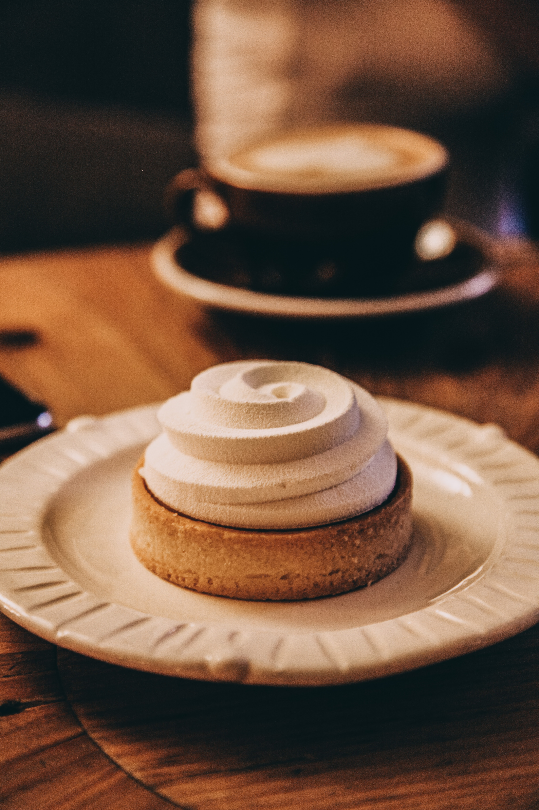

Photo by Kate Shklyar on Unsplash
Cup Cake Recipe
Cupcakes are small, individually-sized cakes that are baked in a cup-shaped mold. They are often decorated with frosting or other sweet toppings and can be made in a variety of flavors. They are typically sweet but they can be savory as well.
Ingredients Used:
- 1 1/2 cups all-purpose flour
- 1 1/2 teaspoons cinnamon
- 1 1/2 teaspoons baking powder
- 1/2 teaspoon salt
- 1/2 (1 stick) cup unsalted butter, at room temperature
- 1 cup granulated sugar
- 2 large eggs
- 2 teaspoons vanilla extract
- 1/4 cup vegetable oil
- 1/2 cup milk
How to:
- Preheat the oven to 350°F. Line a muffin pan with cupcake liners; set aside.
- In a medium bowl, combine the flour, cinnamon, baking powder, and salt; set aside.
- In a large bowl, or the bowl of a standing mixer, cream the butter and sugar together until light and fluffy. Add the eggs, one at a time, until just combined then stir in the vanilla and oil.
- Sprinkle 1/3 of the flour mixture over the butter mixture and gently stir in until barely combined. Add half of the milk, mixing until just combined. Repeat these steps with the remaining flour mixture and milk, ending with the flour. Do not over mix.
- Fill each cupcake tin with 2 tablespoons of batter, or until the cupcake tin is filled half way. Bake the cupcakes for 14 to 16 minutes, or until a toothpick inserted in the center comes out with one or two crumbs clinging to it. Allow the cupcakes to cool completely before frosting.
Notes:
When it says to only fill your cupcake tins half way, I mean it. These cupcakes do not make a dome on top. Instead they are flat. If they rise over the tin, they are not pretty!